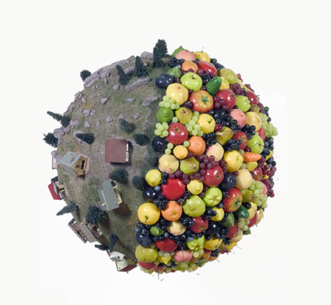

|
Pilot Richard Telles Fine Art, 2000 Los Angeles |

Double Date Galerie Barbara Weiss, 2001 Berlin |
Topology for Museum (without walls) Kunstraum Johannes Widauer, 2002 Innsbruck, Austria |

From the Observatory Paula Cooper Gallery, 2002 New York |
Sandwiched Public Art Fund and the Wrong Gallery, 2003 New York |
Boogie Woogie Wonderland Candy Factory Projects, 2003 Japan |
Ich (36-175-74) Meyer Riegger Galerie, 2003 Karlsruche, Germany |
A Mutually Beneficial Encounter Galerie Christian Nagel, 2003 Cologne, Germany |

Everything is You Galerie Praz-Delavallade, 2003 Paris |

Total Transparency Richard Telles Fine Art, 2004 Los Angeles |

493 KB from the Administered World The Jeffrey Charles Gallery, 2004 London |

The Middle of the Day Cabinet des Estampes at MAMCO, 2004 Geneva |
||||||||||||
| Click on image to view exhibition works |